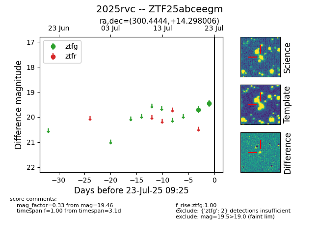

Target ZTF25abceegm at 2025-07-23 12:37, see:
FINK: fink-portal.org/ZTF25abceegm
Lasair: lasair-ztf.lsst.ac.uk/objects/ZTF25abceegm
ALeRCE: alerce.online/object/ZTF25abceegm
TNS: wis-tns.org/object/2025rvc
YSE: ziggy.ucolick.org/yse/transient_detail/2025rvc
alt names
ZTF25abceegm (ztf,fink)
2025rvc (tns,yse)
coordinates:
equatorial (ra, dec) = (300.4444,+14.29801)
galactic (l, b) = (53.8616,-8.50764)
photometry
last ztfg=19.46
2 ztfg detections
